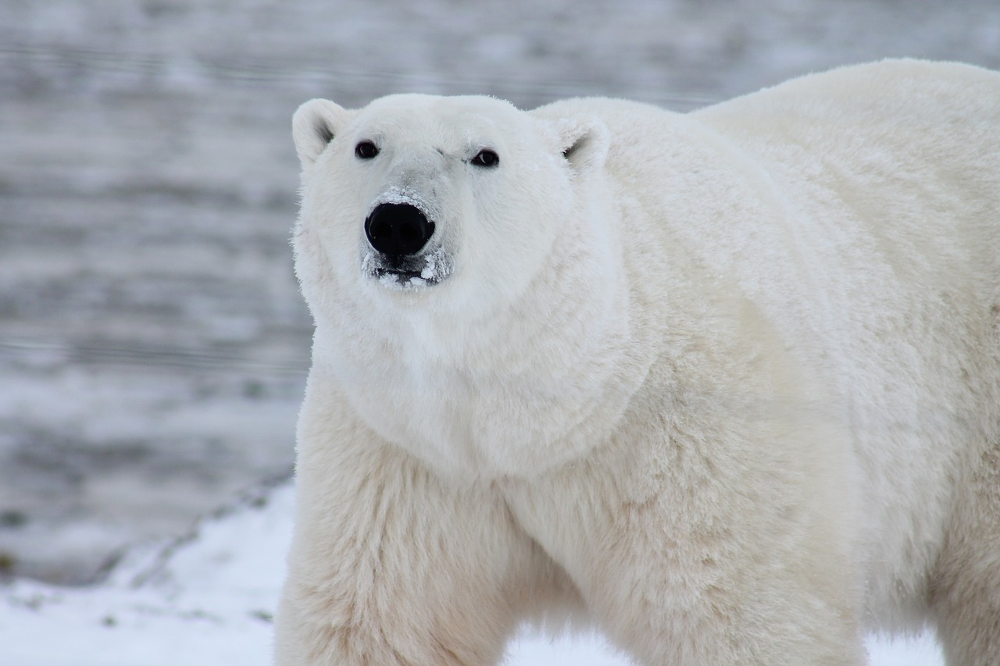

HABITAT
Ours Polaires
Les ours polaires vivent dans l'Arctique, principalement sur la banquise des régions côtières de l'Alaska, du Canada, du Groenland, de la Norvège et de la Russie. Ils dépendent de la glace de mer pour chasser, se reposer et se reproduire.

Ours Bruns
Les ours bruns habitent une grande variété d’écosystèmes, allant des forêts boréales et tempérées aux prairies et zones montagneuses, principalement en Amérique du Nord, en Europe et en Asie. On les trouve dans des régions comme les Rocheuses au Canada, les forêts de Scandinavie, les montagnes des Carpates en Europe de l’Est, et les forêts de l’île d’Hokkaido au Japon. Ils préfèrent les habitats riches en ressources alimentaires, comme les rivières à saumons ou les zones de végétation dense pour les baies, et creusent souvent des tanières dans des pentes boisées pour hiberner.
Chaîne alimentaire
Ours Polaires
L’ours polaire est un superprédateur au sommet de la chaîne alimentaire arctique, sans prédateur naturel hormis l’humain. Ses proies principales sont les phoques (annelé et barbu), riches en graisse, dont il a besoin de 50 à 60 par an pour survivre, représentant 90 % de son apport calorique. Seuls 2 % de ses chasses réussissent, l’obligeant à passer 50 % de son temps à chasser. En cas de pénurie, il chasse des morses, bélugas, narvals, oiseaux marins, ou consomme des carcasses de baleines (jusqu’à 20 % de son régime dans certaines zones comme l’Alaska). En été, il peut manger des baies ou algues, mais ces sources ne suffisent pas. La chaîne commence avec le phytoplancton, consommé par le zooplancton, puis par les poissons (morue arctique), mangés par les phoques. Dans la baie d’Hudson, la banquise se brise 3 semaines plus tôt qu’il y a 30 ans, réduisant l’accès aux phoques et forçant les ours à jeûner jusqu’à 6 mois. Les polluants (PCB, mercure) s’accumulent dans la graisse des phoques, affectant la santé des ours, notamment leur reproduction et leur système immunitaire.
Ours Bruns
Les ours bruns sont des omnivores opportunistes occupant une place élevée dans la chaîne alimentaire forestière, mais ils ne sont pas des superprédateurs comme les ours polaires. Leur régime est extrêmement varié : ils se nourrissent de saumons (jusqu’à 80 kg par jour pendant la saison de frai dans des régions comme l’Alaska), de petits mammifères (écureuils, marmottes), d’insectes (fourmis, termites), de baies (jusqu’à 200 000 baies par jour en été), de racines, et de charognes. Dans certaines régions, comme le parc de Yellowstone, ils chassent occasionnellement des proies plus grandes comme des cerfs ou des wapitis, représentant 10 % de leur apport calorique. Les ours bruns sont aussi en compétition avec d’autres prédateurs comme les loups ou les pumas pour les carcasses. Leur régime varie selon les saisons : en été, 70 % de leur alimentation est végétale, contre seulement 20 % en automne, période où ils accumulent des graisses pour l’hibernation (jusqu’à 400 kg pour les mâles). Les humains affectent leur chaîne alimentaire en réduisant les stocks de saumons (surpêche) et en fragmentant les habitats forestiers.
CARACTÉRISTIQUES
Ours Polaires
L'ours polaire est le plus grand carnivore terrestre, avec des mâles pesant entre 300 et 800 kg. Leur fourrure translucide et leur couche de graisse les protègent du froid. Ils sont d'excellents nageurs grâce à leurs pattes palmées.
Ours Bruns
Les ours bruns varient considérablement en taille selon les sous-espèces et les régions : les mâles pèsent entre 130 et 700 kg, les plus grands étant les ours kodiak en Alaska (jusqu’à 1 500 kg dans de rares cas). Leur fourrure va du brun clair au presque noir, avec une bosse musculaire distinctive sur les épaules, utilisée pour creuser. Contrairement aux ours polaires, ils sont plus terrestres, mais d’excellents grimpeurs, surtout les oursons. Leurs griffes, longues de 5 à 10 cm, sont adaptées pour fouiller le sol à la recherche de racines ou d’insectes.
Importance dans l'histoire du monde
Ours Polaires
Les ours polaires ont joué un rôle symbolique et culturel important à travers l’histoire, notamment pour les peuples autochtones de l’Arctique comme les Inuits, qui les considèrent comme des figures spirituelles représentant la force, la résilience et l’adaptation à des environnements extrêmes. Dans leurs récits, l’ours polaire, ou "Nanuk", est souvent vu comme un guide ou un protecteur, et sa chasse était un rite de passage empreint de respect, où chaque partie de l’animal était utilisée (fourrure pour les vêtements, graisse pour le chauffage, viande pour la nourriture). Au-delà des cultures arctiques, les ours polaires ont fasciné les explorateurs européens dès le Moyen Âge, devenant des symboles de l’inconnu et de la sauvagerie des terres polaires. Par exemple, au 16e siècle, des ours polaires furent capturés et exhibés dans des ménageries royales, comme celle de Christian IV de Danemark, pour impressionner les visiteurs. Plus récemment, depuis le 20e siècle, ils sont devenus des icônes mondiales de la lutte contre le changement climatique, représentant les impacts visibles de la fonte des glaces. Leur image est utilisée par des organisations comme le WWF pour sensibiliser à la préservation des écosystèmes polaires, faisant d’eux des ambassadeurs de la cause environnementale.
Ours Bruns
Les ours bruns ont une place profonde dans l’histoire et la culture humaines, souvent perçus comme des symboles de puissance et de connexion avec la nature. Dans les cultures amérindiennes, comme chez les Tlingits en Alaska, l’ours brun est un totem représentant la force, la protection et la sagesse, et sa chasse était un rituel sacré où l’esprit de l’ours était honoré. En Europe, dans la mythologie nordique, les ours bruns étaient associés à des divinités comme Thor, et les berserkers (guerriers vikings) portaient des peaux d’ours pour canaliser leur puissance. Pendant l’Antiquité romaine, les ours bruns étaient utilisés dans les arènes pour des combats, symbolisant la sauvagerie. Au Moyen Âge, ils étaient dressés pour des spectacles de rue, comme les "ours danseurs". Aujourd’hui, les ours bruns sont des figures culturelles emblématiques : en Russie, l’ours est un symbole national, représentant la force et la résilience, tandis qu’en Californie, l’ours grizzly (une sous-espèce d’ours brun) figure sur le drapeau de l’État, bien qu’il y ait disparu depuis 1922. Leur présence dans les parcs nationaux comme Yellowstone en fait aussi des symboles du tourisme écologique.
Évolution de l’espèce
Ours Polaires
L’ours polaire (Ursus maritimus) est une espèce relativement jeune sur le plan évolutif, ayant divergé de l’ours brun (Ursus arctos) il y a environ 600 000 à 1,2 million d’années, selon des études génétiques récentes (publiées dans Science, 2023). Cette divergence s’est produite pendant le Pléistocène, une période marquée par des glaciations, qui a favorisé l’adaptation des ours polaires à un environnement arctique extrême. Les fossiles les plus anciens d’ours polaires, découverts au Svalbard, datent d’environ 120 000 ans, mais des analyses ADN montrent que leurs ancêtres vivaient déjà dans des régions subarctiques avant de migrer vers le nord. Leur évolution a été marquée par des adaptations spécifiques : une fourrure blanche (résultat de poils translucides qui dispersent la lumière) pour se camoufler dans la neige, une couche de graisse pouvant atteindre 11 cm pour résister au froid, des pattes palmées pour nager (ils peuvent parcourir jusqu’à 100 km en mer), et un métabolisme optimisé pour un régime hyperlipidique à base de phoques. Les ours polaires ont également développé un sens olfactif exceptionnel, capable de détecter une carcasse à 30 km. Cependant, leur évolution est aujourd’hui menacée par le réchauffement climatique : des études estiment que, sans réduction des émissions de CO2, 80 % des populations pourraient disparaître d’ici 2100, car ils ne peuvent pas revenir à un régime terrestre comme leurs cousins ours bruns, leur physiologie étant trop spécialisée.
Ours Bruns
L’ours brun (Ursus arctos) est une espèce plus ancienne et plus diversifiée génétiquement que l’ours polaire, avec une histoire évolutive remontant à environ 5 millions d’années, selon des analyses fossiles et génétiques (Journal of Mammalian Evolution, 2023). Leurs ancêtres, appartenant au genre Ursus, sont apparus en Asie avant de migrer vers l’Europe et l’Amérique du Nord via le pont terrestre de Béring il y a environ 1,3 million d’années. Les ours bruns se sont adaptés à une grande variété d’environnements, ce qui explique leur diversité : les grizzlys d’Amérique du Nord, les ours kodiak d’Alaska, et les ours bruns européens présentent des différences génétiques marquées. Leur évolution a favorisé des adaptations comme une dentition omnivore (molaires flats pour broyer les végétaux, canines pour la viande), une force physique exceptionnelle (ils peuvent soulever des rochers de 300 kg), et un métabolisme capable de supporter l’hibernation (baisse de la fréquence cardiaque de 40 à 10 battements par minute). Les ours bruns partagent un ancêtre commun avec les ours polaires, mais leur flexibilité alimentaire leur a permis de survivre à des changements climatiques majeurs, bien que certaines sous-populations, comme les grizzlys des plaines américaines, aient disparu à cause de la chasse humaine.
REPRODUCTION
Ours Polaires
Les ours polaires (Ursus maritimus) ont un cycle reproductif complexe, adapté aux conditions extrêmes de l’Arctique, mais très vulnérable aux perturbations environnementales. La saison d’accouplement a lieu au printemps, entre avril et juin, lorsque les mâles parcourent des centaines de kilomètres sur la banquise pour trouver des femelles réceptives, détectées grâce à leur odorat exceptionnel (jusqu’à 20 km de distance). Les combats entre mâles pour une partenaire sont fréquents, souvent violents, et peuvent durer plusieurs heures, les mâles les plus dominants (généralement ceux pesant plus de 500 kg) ayant un avantage. Après l’accouplement, les femelles subissent une implantation différée, un mécanisme évolutif unique : l’embryon reste en dormance jusqu’à l’automne, et la gestation effective ne commence que si la femelle a accumulé assez de graisse—au moins 200 kg selon une étude de l’Université de Wyoming (2022)—pour survivre à l’hibernation. La gestation totale, incluant cette phase différée, dure entre 195 et 265 jours. À l’automne (octobre-novembre), les femelles gravides creusent des tanières dans la neige ou sur des pentes côtières gelées, souvent à des altitudes de 300 à 500 mètres pour éviter les inondations dues à la fonte précoce. Elles donnent naissance entre décembre et janvier à 1 ou 2 oursons (rarement 3), chacun pesant 600 à 700 g, soit moins de 1 % du poids de la mère. Ces oursons, aveugles et sans poils à la naissance, dépendent entièrement du lait maternel, riche en graisse (jusqu’à 35 % de lipides), pour atteindre 10 à 15 kg au printemps, lorsqu’ils quittent la tanière entre mars et avril. Les femelles jeûnent pendant toute cette période, perdant jusqu’à 40 % de leur masse corporelle, ce qui les rend très vulnérables à la malnutrition. Les oursons restent avec leur mère pendant 2 à 2,5 ans, apprenant à chasser et à nager, avant de devenir indépendants. Les femelles atteignent la maturité sexuelle entre 3 et 4 ans, les mâles entre 4 et 6 ans, et une femelle produit généralement 5 portées au cours de sa vie, soit un intervalle de 2 à 3 ans entre chaque portée. La population mondiale est estimée entre 0 et 0 individus (UICN, 2023), mais 7 des 19 sous-populations sont en déclin, notamment dans la mer de Beaufort et la baie d’Hudson, où la fonte précoce de la banquise réduit la période de chasse. Une étude de Ecological Applications (2023) montre que, dans la baie d’Hudson, la survie des oursons a chuté de 30 % en 15 ans à cause de la malnutrition maternelle : pour chaque semaine de fonte anticipée, les femelles perdent 10 kg, diminuant les chances de survie des petits de 5 %. De plus, les polluants comme les PCB et le mercure, qui s’accumulent dans le lait maternel, affectent le développement des oursons, réduisant leur système immunitaire (augmentation de 20 % des infections, selon une étude de 2022) et leur fertilité future (baisse de 15 % des hormones reproductives). Sans réduction des émissions globales de CO2, des modèles prédisent une chute de 50 % des naissances d’ici 2100, menaçant la viabilité de l’espèce à long terme.
Ours Bruns
Les ours bruns ont un cycle reproductif adapté aux saisons tempérées, mais également sensible aux perturbations environnementales. L’accouplement a lieu entre mai et juillet, période où les mâles, qui parcourent jusqu’à 200 km² pour trouver des femelles, se battent violemment pour établir leur dominance—les combats peuvent entraîner des blessures graves, voire la mort. Comme les ours polaires, les femelles subissent une implantation différée : après la fécondation, l’embryon reste en dormance jusqu’à l’automne (novembre-décembre), lorsque la femelle entre en hibernation. La gestation effective dure environ 60 à 70 jours, et les femelles donnent naissance entre janvier et mars, pendant l’hibernation, à 1 à 4 oursons (2 en moyenne), pesant 300 à 500 g chacun. Les oursons naissent aveugles et sans poils, et dépendent du lait maternel (20 % de graisse) pour atteindre 5 à 8 kg à la sortie de la tanière en avril ou mai. Les femelles, qui perdent jusqu’à 30 % de leur poids pendant l’hibernation, élèvent leurs petits pendant 1,5 à 2,5 ans, leur apprenant à chercher de la nourriture et à éviter les dangers (notamment les mâles adultes, qui peuvent tuer les oursons pour ramener la femelle en chaleur). Les femelles atteignent la maturité sexuelle à 4-5 ans, les mâles à 5-7 ans, et une femelle produit une portée tous les 2 à 4 ans, soit environ 5 à 8 portées dans sa vie. La population mondiale des ours bruns est estimée à 0 individus (UICN, 2023), mais certaines sous-populations, comme les grizzlys des Rocheuses, ont vu leur taux de reproduction chuter de 20 % en 30 ans à cause de la réduction des ressources alimentaires (saumons, baies) et des conflits avec les humains. Les pesticides, comme le DDT, détectés dans le lait maternel, réduisent aussi la fertilité des oursons (baisse de 10 % des hormones reproductives, selon une étude de 2022).
MENACES
Ours Polaires
Le changement climatique constitue la menace la plus immédiate et dévastatrice pour les ours polaires, en raison de la fonte accélérée de la banquise arctique, leur habitat essentiel pour chasser, se déplacer et se reproduire. Une étude publiée dans Nature Climate Change (2020) prévoit que, sans réduction drastique des émissions de gaz à effet de serre, la banquise pourrait disparaître en été d’ici 2035, réduisant l’habitat des ours polaires de 70 % d’ici 2050 selon les modèles du US Geological Survey. Dans la baie d’Hudson, par exemple, la saison sans glace s’est allongée de trois semaines depuis les années 1990, obligeant les ours à jeûner jusqu’à 180 jours par an, contre 120 jours il y a 30 ans (Polar Bears International, 2024). Cette privation alimentaire entraîne une perte de poids moyenne de 10 kg par semaine de fonte anticipée, ce qui est particulièrement critique pour les femelles gestantes : une étude de l’Université de l’Alberta (2023) montre that 30 % des femelles de la région n’atteignent plus le seuil de 200 kg nécessaire pour une implantation embryonnaire réussie, entraînant une chute du taux de survie des oursons de 80 % à 50 % en deux décennies. Par ailleurs, la pollution chimique aggrave leur vulnérabilité : les polluants organiques persistants (POP) comme les PCB, les dioxines et le mercure s’accumulent dans la chaîne alimentaire arctique, atteignant des niveaux alarmants dans les tissus adipeux des phoques, principale proie des ours. Une analyse de l’Université de Toronto (2022) a révélé que certaines populations d’ours polaires présentent des concentrations de PCB 10 à 15 fois supérieures aux seuils de toxicité, provoquant des troubles hormonaux (baisse de la testostérone chez les mâles de 20 %), une immunosuppression (augmentation des infections de 25 %), et une mortalité accrue des oursons (jusqu’à 40 % dans les zones les plus polluées comme la mer de Barents). Le développement industriel constitue une autre menace majeure : l’extraction pétrolière et gazière dans l’Arctique, notamment dans la réserve nationale de pétrole de l’Arctique en Alaska, a détruit 15 000 km² d’habitat entre 2010 et 2023, selon le US Fish and Wildlife Service. Ces activités augmentent les risques de déversements pétroliers—un seul incident majeur pourrait contaminer jusqu’à 500 km² de banquise, rendant l’eau toxique pour les phoques et, par extension, les ours. Le tourisme arctique, en pleine expansion (croissance de 15 % par an, selon l’Association internationale des voyagistes en Arctique, 2024), perturbe également les ours : les croisières, qui attirent 1,5 million de visiteurs annuels dans l’Arctique, empiètent sur leurs zones de reproduction, provoquant du stress et des abandons de tanières (jusqu’à 10 % des femelles au Svalbard, selon une étude de 2023). Enfin, bien que la chasse soit réglementée dans les cinq pays de l’aire de répartition (Canada, États-Unis, Russie, Norvège, Groenland), le braconnage persiste : le WWF estime que 300 à 500 ours sont tués illégalement chaque année pour alimenter le marché noir de fourrures et de trophées, notamment en Russie et au Groenland, où les contrôles sont insuffisants. L’UICN classe les ours polaires comme vulnérables depuis 2006, et les projections indiquent que, sans intervention, 12 des 19 sous-populations pourraient disparaître d’ici 2050, avec une réduction globale de la population à moins de 10 000 individus d’ici 2100.
Ours Bruns
Les ours bruns sont principalement menacés par la perte d’habitat due à la déforestation, l’urbanisation et l’agriculture intensive. En Europe, 40 % de leurs habitats forestiers ont été fragmentés depuis 1950, selon le WWF, forçant les ours à s’approcher des zones humaines, ce qui augmente les conflits : en Roumanie, où vit la plus grande population européenne (6 000 ours), les attaques sur le bétail ont doublé depuis 2000. La chasse, bien que réglementée dans de nombreux pays, reste une menace : en Russie, environ 1 500 ours bruns sont tués légalement chaque année pour le sport ou la protection des biens, mais le braconnage pour les peaux et la bile (utilisée en médecine traditionnelle asiatique) tue 500 à 1 000 ours supplémentaires, selon une estimation de 2023. Le changement climatique affecte aussi les ours bruns, mais de manière indirecte : la réduction des stocks de saumons (baisse de 30 % en Colombie-Britannique depuis 1990 due au réchauffement des rivières) limite leur principale source de graisse avant l’hibernation, entraînant une baisse de 15 % du poids moyen des ours dans cette région. Les sécheresses, plus fréquentes, réduisent aussi la disponibilité des baies (jusqu’à 50 % dans certaines zones des Rocheuses). Les collisions avec des véhicules (environ 200 ours tués par an en Amérique du Nord) et les empoisonnements accidentels par des pesticides (comme le glyphosate, détecté chez 60 % des ours testés en Suède en 2022) aggravent leur vulnérabilité. Bien que l’UICN classe les ours bruns comme "préoccupation mineure" globalement, certaines sous-populations, comme les grizzlys du Mexique (éteints dans les années 1960) et ceux des plaines américaines, ont disparu, et d’autres, comme en Espagne (population cantabrique de 300 individus), sont en danger critique.
CONSERVATION
Ours Polaires
La conservation des ours polaires repose sur une approche multidimensionnelle impliquant des gouvernements, des ONG, des scientifiques et les communautés locales pour protéger leur habitat et contrer les menaces qui les mettent en péril. Au niveau mondial, des organisations comme le WWF et Polar Bears International militent pour des politiques climatiques strictes, en s’appuyant sur des cadres comme l’Accord de Paris, qui vise à limiter le réchauffement global à 1,5 °C. Par exemple, le WWF a contribué à la création de l’Arctic Climate Action Plan (2022), un programme qui finance des projets d’énergie renouvelable dans les pays arctiques, réduisant les émissions de CO2 de 5 millions de tonnes par an—l’équivalent de la préservation de 0 km² de banquise sur une décennie. Sur le terrain, les technologies de suivi jouent un rôle clé : en 2023, Polar Bears International a équipé 250 ours polaires de colliers GPS dans la mer de Beaufort, révélant une contraction de 30 % de leur aire de chasse en 10 ans, des données qui ont conduit à l’extension de zones protégées dans la région (+0 km² en 2024). Les initiatives communautaires sont également cruciales : au Canada, le programme Arctic Guardian, lancé en 2018, forme des patrouilles Inuits pour gérer les interactions homme-ours, un problème croissant alors que la fonte des glaces pousse les ours vers les villages (augmentation de 50 % des incidents depuis 2010). En 2024, 50 patrouilles ont été déployées, réduisant les abattages d’ours de 40 % par rapport à 2020, tout en sensibilisant les communautés à la coexistence pacifique. Sur le plan industriel, des réglementations plus strictes émergent : en Norvège, un sanctuaire de 0 km² autour du Svalbard a été établi en 2023, interdisant l’exploration pétrolière et gazière, tandis qu’en Alaska, un moratoire de 10 ans sur les nouveaux forages a été imposé en 2024 après des pressions d’ONG comme Greenpeace. La lutte contre la pollution chimique progresse grâce à des accords internationaux comme la Convention de Stockholm sur les POP, qui a réduit les émissions globales de PCB de 60 % depuis 2000, bien que leur persistance dans l’environnement reste problématique—les niveaux dans les tissus des ours polaires n’ont diminué que de 10 % en 20 ans (Environmental Science & Technology, 2023). Les efforts de sensibilisation sont également essentiels : Polar Bears International a lancé le programme “Adopt a Polar Bear”, qui a collecté 0 dollars en 2024, finançant des recherches sur l’adaptation des ours au changement climatique, notamment des études sur leur capacité à chasser des proies alternatives comme les morses (seulement 5 % des ours y parviennent, selon une étude de 2023). Le tourisme durable est aussi encouragé : des voyagistes comme Quark Expeditions reversent 1 % de leurs revenus à des projets de conservation, soit 500 000 dollars en 2024, pour protéger les zones de reproduction. Les citoyens peuvent agir à leur échelle : réduire sa consommation d’énergie de 10 % permet de préserver 1 m² de banquise par an (WWF, 2024), tandis que des actions comme les nettoyages de plages—qui ont retiré 0 tonnes de microplastiques des côtes arctiques en 2023—limitent la pollution marine. Soutenir financièrement ou bénévolement des ONG, ou adopter des comportements écoresponsables comme privilégier les transports publics, contribue directement à la survie des ours polaires et de leur écosystème fragile.
Ours Bruns
La conservation des ours bruns repose sur la protection de leurs habitats et la réduction des conflits avec les humains. Des ONG comme le WWF travaillent à la création de corridors écologiques pour reconnecter les habitats fragmentés : en Europe, le projet *Green Belt Initiative* a restauré 0 km² de forêts entre 2015 et 2023, permettant aux ours bruns des Carpates de se déplacer plus librement. En Amérique du Nord, le *Yellowstone to Yukon Conservation Initiative* a protégé 0 km² d’habitat, augmentant la population de grizzlys de 10 % depuis 2000. Les programmes de coexistence sont cruciaux : en Colombie-Britannique, des clôtures électriques subventionnées ont réduit les attaques sur le bétail de 60 % depuis 2018, tandis qu’en Espagne, des apiculteurs utilisent des ruches protégées pour éviter les raids d’ours (baisse de 70 % des conflits). La chasse est strictement réglementée dans de nombreux pays : en Suède, un quota annuel de 300 ours est imposé pour maintenir une population stable (environ 3 000 individus). La lutte contre le braconnage progresse : en Russie, des patrouilles anti-braconnage ont saisi 200 peaux d’ours bruns en 2023, et des campagnes éducatives en Asie réduisent la demande de bile d’ours (baisse de 40 % depuis 2010). Les parcs nationaux jouent un rôle clé : dans le parc de Banff (Canada), les passages fauniques sur les autoroutes ont réduit les collisions de 80 % depuis 2015. Les citoyens peuvent contribuer en soutenant les ONG, en participant à des programmes de plantation d’arbres (1 million d’arbres plantés dans les Rocheuses en 2023), or en adoptant des pratiques durables comme réduire l’usage de pesticides pour protéger les écosystèmes dont dépendent les ours bruns.
RÉPARTITION
Ours Polaires
Les ours polaires vivent exclusivement dans l’hémisphère nord, autour de l’océan Arctique, où ils occupent un territoire couvrant environ 15 millions de km², principalement sur la banquise et les zones côtières gelées. Leur répartition s’étend sur cinq pays principaux : le Canada, qui abrite 60 % de la population mondiale (environ 0 individus, surtout dans l’archipel arctique et la baie d’Hudson), les États-Unis (Alaska, avec 4 000 ours dans la mer de Beaufort et la mer des Tchouktches), la Russie (Sibérie orientale et archipel François-Joseph, environ 5 000 ours), la Norvège (Svalbard, environ 3 000 ours), et le Danemark (Groenland, avec 2 500 ours). Ces populations sont divisées en 19 sous-populations distinctes, définies par leurs mouvements et leur génétique, selon le Polar Bear Specialist Group (PBSG, 2023). Les ours polaires préfèrent les zones où la banquise est dynamique—c’est-à-dire où la glace se forme et se brise régulièrement—car ces zones favorisent l’accès aux phoques, qui utilisent les fissures pour respirer. Par exemple, dans la mer de Beaufort, les ours parcourent en moyenne 1 500 km par an pour suivre la banquise saisonnière, selon des données GPS collectées en 2023. Cependant, la fonte accélérée de la banquise modifie leur répartition : dans la baie d’Hudson sud, la couverture de glace a diminué de 20 % depuis 1990, forçant les ours à migrer plus au nord ou à s’aventurer sur la terre ferme, où ils peinent à trouver de la nourriture (seulement 5 % de leur apport calorique provient de sources terrestres comme les baies ou les oiseaux). Cette migration augmente les interactions avec les humains : au Canada, les signalements d’ours polaires dans les villages ont augmenté de 50 % depuis 2010 (Environment Canada, 2024). Dans des régions comme le Svalbard, les ours dépendent de plus en plus des glaciers côtiers pour se reposer, mais ces glaciers reculent de 10 mètres par an en moyenne, réduisant les zones de repos de 15 % en 20 ans. Par ailleurs, certaines sous-populations, comme celle de la mer de Barents, montrent une résilience inattendue : une étude de 2023 a révélé que 10 % des ours de cette région ont adapté leur régime en chassant des morses, bien que cela reste insuffisant pour compenser la perte de phoques. Les changements climatiques pourraient réduire l’aire de répartition des ours polaires de 30 % d’ici 2050, selon le WWF, avec des zones comme la mer des Tchouktches devenant inhabitables d’ici 2070 si la température globale augmente de plus de 2 °C.
Ours Bruns
Les ours bruns ont une répartition beaucoup plus large et diversifiée, couvrant environ 20 millions de km² à travers l’hémisphère nord, bien que leur aire ait diminué de 50 % depuis le 19e siècle à cause de l’expansion humaine. En Amérique du Nord, ils vivent principalement dans l’ouest du Canada (100 000 individus, notamment en Colombie-Britannique) et en Alaska (30 000 ours, dont les kodiaks). Aux États-Unis, les grizzlys ne subsistent que dans des zones protégées comme Yellowstone and Glacier National Park (environ 2 000 individus). En Europe, les populations sont fragmentées : la Scandinavie compte 3 000 ours, les Carpates en Roumanie 6 000, et des populations relictuelles existent dans les Pyrénées (50 ours) et les Alpes italiennes (60 ours). En Asie, on les trouve en Russie (100 000 ours, la plus grande population mondiale), au Japon (Hokkaido, 3 000 ours), et dans l’Himalaya (500 ours). Les ours bruns migrent saisonnièrement à la recherche de nourriture : dans les Rocheuses, ils parcourent jusqu’à 500 km par an entre les zones de frai des saumons et les zones de baies. La déforestation et l’urbanisation réduisent leur aire : en Chine, leur habitat a diminué de 70 % depuis 1900, et ils sont désormais limités aux zones montagneuses comme le plateau tibétain (1 000 ours).
GALERIE
PARTICIPEZ À LA CONSERVATION
Laissez un message ou inscrivez-vous pour recevoir des nouvelles sur la conservation des ours polaires et des ours bruns.
Message envoyé avec succès !
ASSOCIATIONS DE PROTECTION DES OURS
Découvrez des organisations qui œuvrent pour la protection des ours polaires, des ours bruns et d'autres espèces d'ours à travers le monde :
- Polar Bears International - Dédiée à la protection des ours polaires et de leur habitat arctique.
- International Association for Bear Research and Management (IBA) - Soutient la recherche et la conservation des ours dans plus de 40 pays.
- Bear Conservation - Fournit des informations complètes sur toutes les espèces d’ours et travaille à leur protection.
- World Animal Protection - Lutte contre l’exploitation des ours, notamment dans l’industrie de la bile d’ours.
- Free the Bears - Protège les ours sauvages et réduit les conflits humains-ours, notamment en Asie.
- WWF (World Wide Fund for Nature) - Travaille à la conservation des ours polaires et bruns à travers des projets mondiaux.
- Bear Trust International - Axée sur la conservation des ours et l’éducation environnementale.
- The Grizzly Bear Foundation - Basée au Canada, elle se concentre sur la protection des grizzlys.